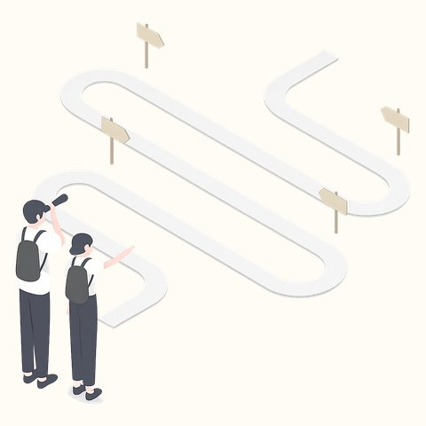
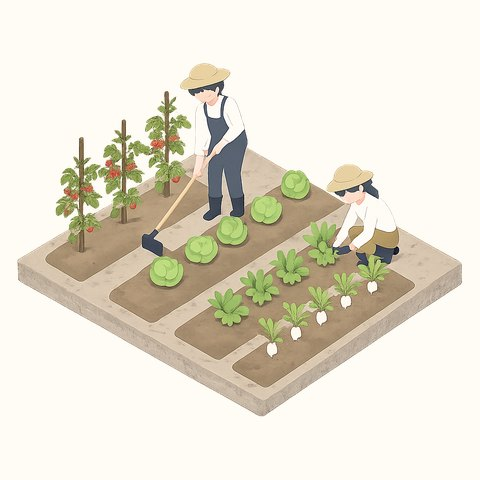

SERVICE
ITスキルを習得し、地域課題の解決につながるデジタル活用を進めます。

イベント運営、情報発信、観光コンテンツの企画。町の魅力を外へ届けます。

植え付けや収穫などの農作業支援と、販売経路の確保を支えます。
町内の保育機関や地域団体と連携し、子どもと高齢者の暮らしを支えます。
REPORTS
読み込み中...
NEWS
読み込み中...
JOIN US
大都市圏などから飯南町へ移住できる方。期間は最長3年（1年ごとに更新）。 農業・観光・教育分野の地域協力活動と、ITスキルを活かした情報発信・業務改善に取り組みます。